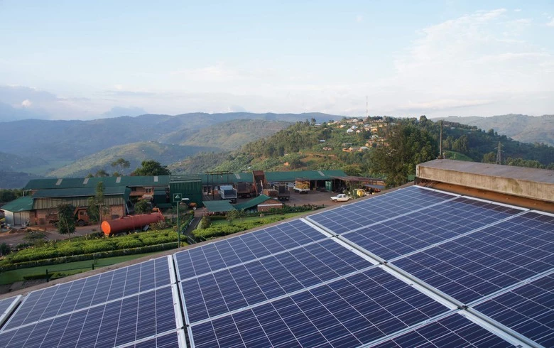
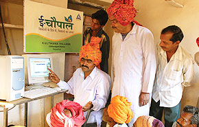
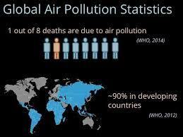

M-Kopa Solar, Kenya

M-Kopa Solar is a mobile-based platform that provides affordable solar energy to households in rural Kenya. The
platform enables households to make daily payments for solar panels, which can be used for lighting, phone
charging, and other small appliances. The platform uses mobile money services to enable payments and to monitor
energy usage. The initiative has had a significant impact on rural electrification in Kenya, providing clean and
affordable energy to over 1 million households.
The M-Kopa Solar initiative has had a significant impact on the lives of households in rural Kenya. By providing
affordable solar energy, the initiative has improved access to clean energy, reducing reliance on expensive and
polluting alternatives such as kerosene lamps. This has had positive impacts on health, as well as on household
finances, as households are able to save money on energy costs. The initiative has also contributed to rural
electrification in Kenya, improving access to electricity and supporting economic development. Additionally, by
reducing the use of fossil fuels, the initiative has had positive environmental impacts by reducing greenhouse
gas emissions and air pollution.
E-Choupal, India

E-Choupal is an ICT-based initiative that connects small-scale farmers in rural India to markets and
information. The initiative provides farmers with access to weather forecasts, market prices, and best practices
for sustainable agriculture. It also provides a platform for farmers to sell their products directly to buyers,
bypassing intermediaries and increasing their profits. The initiative has had a significant impact on rural
livelihoods, improving the income and productivity of thousands of small-scale farmers.
The E-Choupal initiative has had a significant impact on small-scale farmers in rural India. By providing access
to markets and information, the initiative has improved the productivity and profitability of small-scale
farming, supporting rural livelihoods and reducing poverty. The initiative has also promoted sustainable
agriculture practices, contributing to environmental sustainability. By bypassing intermediaries and connecting
farmers directly to buyers, the initiative has also improved market transparency and reduced market
inefficiencies.
OpenAQ, Global
OpenAQ is an open-source platform that monitors air quality data from around the world. The platform collects
and aggregates data from various sources, including government agencies, non-profit organizations, and citizen
scientists. It then makes the data available to the public through an interactive map and data visualization
tools. The platform has helped to increase public awareness of air pollution and to inform policy and advocacy
efforts around the world.
The OpenAQ initiative has had a significant impact on public awareness of air pollution and environmental
advocacy efforts around the world. By providing access to air quality data, the initiative has increased public
awareness of air pollution and its impacts on health and the environment. The initiative has also supported
advocacy efforts to address air pollution, providing data to inform policy decisions and to hold polluters
accountable. By increasing transparency and access to air quality data, the initiative has also contributed to
environmental sustainability by promoting data-driven decision-making and accountability.
